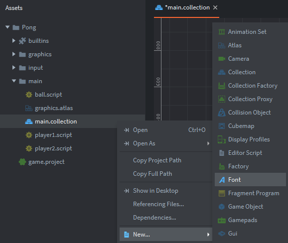
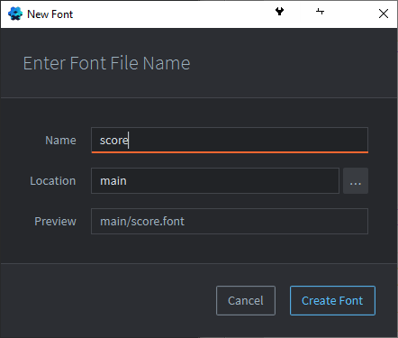
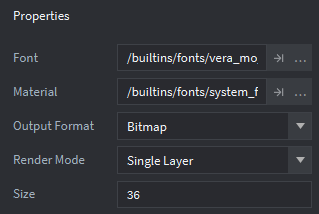
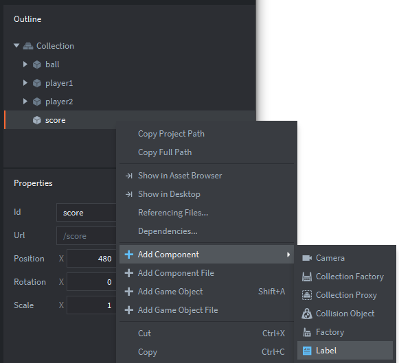
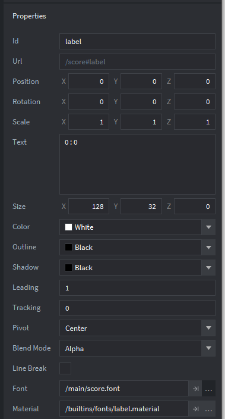

Tutorials for 2D games projects
Pong | Creating a font and label to display the score.
Putting text on the screen requires a font and a game object to hold a label.
- Using the assets panel, right click, 'main.collection' and choose, 'New', 'Font'.

- Name the new font, 'score' and click, 'Create Font'. If you want different sized text for different components of your game, each will need to be its own font file, so it makes sense to name this font what we intend to use it for to aid maintainability.

Defold reads font data from files in TrueType, OpenType and BMFont formats, and stores the characters as either a bitmap or a vector (called a distance field). This is set in the 'Output Format' property. Just like graphics, writing text to the screen is computationally expensive, so it is important for Defold to store font data in a memory efficient way.
If we are using a static font size, it is better to use a bitmap format. If the font needs to scale during the game it is better to use a distance field to avoid loss of quality. Distance fields need to be calculated when they are rendered. Surprisingly it is therefore better to use a bitmap when you can because it is more efficient for the graphics card. Remember games development is about seeking those small performance gains to maximise a frame rate.
The default size for the system font is 14 point. This will be a little too small in our game, so we are going to increase this to 28.
- In the properties panel, change the 'Size' property to 28.
Defold effectively recreates the bitmaps it needs for each character when you do this.

- Save the changes by pressing CTRL-S or 'File', 'Save All'.
- In the assets panel, double click 'main.collection'.
- In the outline panel right click 'Collection' and choose, 'Add Game Object'.
- In the properties panel, change the Id of the object to be, 'score'.
- Set the X position property to be 480. Set the Y position property to be 600.
- In the outline panel. right click the score game object and select, 'Add Component', 'Label'.

- In the properties panel change the 'Text' property to be '0 : 0'.
- In the properties panel, change the 'Font' property to be "/main/score.font"

- Save the changes by pressing CTRL-S or 'File', 'Save All'.
- Run the program at this point and you should see the score at the top of the screen.

The next stage is to get the ball to send a message to the score game object when a goal is scored. Stage 8b >
 Craig'n'Dave | Version 1.3
Craig'n'Dave | Version 1.3